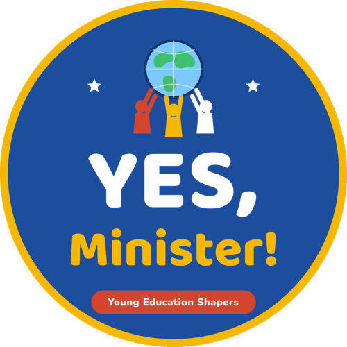

YES, Minister! – Young Education Shapers
Αν ήσουν Υπουργός Παιδείας, τι θα άλλαζες;If you were the Minister of Education, what would you change?
Στο YES, Minister! παιδιά από την Ελλάδα, την Κύπρο, την Ιταλία και την Ιρλανδία γίνονται Υπουργοί για έναν χρόνο. Δουλεύουν σε έξι διεθνή υπουργεία, το καθένα με μέλη και από τα τέσσερα σχολεία. Κάθε μήνας φέρνει μία απλή αποστολή: τα παιδιά πρώτα δημιουργούν κάτι μαζί σε διεθνείς ομάδες, και μετά το χρησιμοποιούν σε μια πραγματική δράση στο δικό τους σχολείο.
In YES, Minister!, children from Greece, Cyprus, Italy and Ireland become Ministers for a year. They work in six international ministries, each with members from all four schools. Every month brings one simple mission: the children first create something together in transnational teams, and then use it for a real action in their own school.
Συνδέεται με το έργο Erasmus+Connected to our Erasmus+ project «155 Κομμάτια, Ένα Παζλ»“155 Pieces, One Puzzle”.
Περισσότερα για το έργοRead more about the project
Οι αποστολές είναι απλές και χαρούμενες: μια αλυσίδα καλοσύνης, ένα παιχνίδι διαλείμματος για όλους, μια «Ώρα του Σχολείου των Ονείρων», ένα escape room για την ασφάλεια στο διαδίκτυο, ένα τραγούδι ασφάλειας, πινακίδες για τα φυτά και αυτοκόλλητα «Switch it off!». Τα παιδιά δουλεύουν με συνεργατικά εργαλεία όπως Padlet, Canva, Book Creator και Genially, και τέσσερις διαδικτυακές συναντήσεις φέρνουν κοντά όλους τους Υπουργούς μέσα στη χρονιά.
The missions are simple and joyful: a kindness chain, a break-time game for everyone, a Dream School Hour, an online-safety escape room, a safety song, plant signs and “Switch it off!” stickers. The children use collaborative tools such as Padlet, Canva, Book Creator and Genially, and four online meetings bring all the Ministers together during the year.
🗓️ Οι αποστολές της χρονιάςThe year's missions
Σε κάθε αποστολή τα παιδιά μετρούν, φτιάχνουν απλά γραφήματα και γράφουν σύντομες αναφορές στα αγγλικά.
In every mission the children count, make simple graphs and write short reports in English.
🎯 Τι θα κάνουν οι μαθητέςPupils will
- Θα χρησιμοποιούν απλά αγγλικά για να σχεδιάζουν, να ενημερώνουν και να παίζουν με παιδιά από τρεις άλλες χώρες
- Θα δουλεύουν σε διεθνείς ομάδες: θα μοιράζονται ιδέες, θα ακούν, θα αποφασίζουν μαζί και θα κρατούν τις υποσχέσεις τους
- Θα μετρούν, θα υπολογίζουν και θα φτιάχνουν απλά γραφήματα από τις δικές τους αποστολές
- Θα χρησιμοποιούν την τεχνολογία και την ΤΝ με ασφάλεια και σύνεση
- Θα ξέρουν τι να κάνουν σε μια έκτακτη ανάγκη και θα θυμούνται τον αριθμό 112
- Θα κάνουν πραγματικές δράσεις για την καλοσύνη, τη συμπερίληψη, την ασφάλεια και το περιβάλλον στο σχολείο τους
- Θα νιώθουν περήφανοι που οι πράξεις τους μετράνε και που έχουν φίλους σε όλη την Ευρώπη
- Use simple English to plan, report and play with children from three other countries
- Work in international teams: share ideas, listen, decide together and keep promises
- Count, measure and make simple graphs from their own missions
- Use technology and AI safely and wisely
- Know what to do in an emergency and remember the number 112
- Carry out real actions for kindness, inclusion, safety and the environment in their school
- Feel proud that their actions count and that they have friends across Europe
Το έργο καλύπτει όλους τους άξονες του θέματος eTwinning «Future-Ready Schools», με επίκεντρο τη φωνή των μαθητών.
The project covers every strand of the eTwinning theme “Future-Ready Schools”, with pupil voice at its centre.